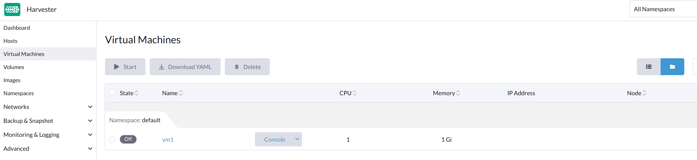

Problèmes de machine virtuelle
Les sections suivantes contiennent des informations utiles pour résoudre les problèmes liés à la gestion des machines virtuelles SUSE Virtualization.
Le bouton Démarrer de la machine virtuelle n’est pas visible
Description du problème
Dans de rares occasions, le bouton Démarrer est indisponible sur l’interface utilisateur SUSE Virtualization pour les machines virtuelles qui sont arrêtées. Sans ce bouton, les utilisateurs ne peuvent pas démarrer les machines virtuelles.

Opérations générales de la machine virtuelle
Sur l’interface utilisateur SUSE Virtualization, le bouton Interrompre est visible après qu’une machine virtuelle a été créée et démarrée.

Le bouton Démarrer est visible après que la machine virtuelle a été arrêtée.

Lorsque la machine virtuelle est éteinte de l’intérieur, les boutons Démarrer et Redémarrer sont visibles.

Objets généraux liés à la machine virtuelle
Une machine virtuelle en cours d’exécution
Les objets vm, vmi et pod, qui sont tous liés à la machine virtuelle, existent. Le statut des trois objets est Running.
# kubectl get vm NAME AGE STATUS READY vm8 7m25s Running True # kubectl get vmi NAME AGE PHASE IP NODENAME READY vm8 78s Running 10.52.0.199 harv41 True # kubectl get pod NAME READY STATUS RESTARTS AGE virt-launcher-vm8-tl46h 1/1 Running 0 80s
Une machine virtuelle arrêtée à l’aide de l’interface utilisateur SUSE Virtualization
Seul l’objet vm existe et son statut est Stopped. Les objets vmi et pod disparaissent.
# kubectl get vm NAME AGE STATUS READY vm8 123m Stopped False # kubectl get vmi No resources found in default namespace. # kubectl get pod No resources found in default namespace. #
Une machine virtuelle arrêtée à l’aide de la commande d’arrêt de la machine virtuelle
Les objets vm, vmi et pod, qui sont tous liés à la machine virtuelle, existent. Le statut de vm est Stopped, tandis que le statut de pod est Completed.
# kubectl get vm NAME AGE STATUS READY vm8 134m Stopped False # kubectl get vmi NAME AGE PHASE IP NODENAME READY vm8 2m49s Succeeded 10.52.0.199 harv41 False # kubectl get pod NAME READY STATUS RESTARTS AGE virt-launcher-vm8-tl46h 0/1 Completed 0 2m54s
Analyse du problème
Lorsque le problème se produit, les objets vm, vmi et pod existent. Le statut des objets est similaire à celui de une machine virtuelle arrêtée à l’aide de la commande d’arrêt de la machine virtuelle.
Exemple :
La VM ocffm031v000 n’est pas prête (status: "False") car le pod virt-launcher est en train de se terminer (reason: "PodTerminating").
- apiVersion: kubevirt.io/v1
kind: VirtualMachine
...
status:
conditions:
- lastProbeTime: "2023-07-20T08:37:37Z"
lastTransitionTime: "2023-07-20T08:37:37Z"
message: virt-launcher pod is terminating
reason: PodTerminating
status: "False"
type: Ready
De même, le VMI (instance de machine virtuelle) ocffm031v000 n’est pas prête (status: "False") car le pod virt-launcher est en train de se terminer (reason: "PodTerminating").
- apiVersion: kubevirt.io/v1
kind: VirtualMachineInstance
...
name: ocffm031v000
...
status:
activePods:
ec36a1eb-84a5-4421-b57b-2c14c1975018: aibfredg02
conditions:
- lastProbeTime: "2023-07-20T08:37:37Z"
lastTransitionTime: "2023-07-20T08:37:37Z"
message: virt-launcher pod is terminating
reason: PodTerminating
status: "False"
type: Ready
En revanche, le pod virt-launcher-ocffm031v000-rrkss n’est pas prêt (status: "False") car le pod a terminé son exécution (reason: "PodCompleted").
Le conteneur sous-jacent 0d7a0f64f91438cb78f026853e6bebf502df1bdeb64878d351fa5756edc98deb est terminé, et le exitCode est 0.
- apiVersion: v1
kind: Pod
...
name: virt-launcher-ocffm031v000-rrkss
...
ownerReferences:
- apiVersion: kubevirt.io/v1
...
kind: VirtualMachineInstance
name: ocffm031v000
uid: 8d2cf524-7e73-4713-86f7-89e7399f25db
uid: ec36a1eb-84a5-4421-b57b-2c14c1975018
...
status:
conditions:
- lastProbeTime: "2023-07-18T13:48:56Z"
lastTransitionTime: "2023-07-18T13:48:56Z"
message: the virtual machine is not paused
reason: NotPaused
status: "True"
type: kubevirt.io/virtual-machine-unpaused
- lastProbeTime: "null"
lastTransitionTime: "2023-07-18T13:48:55Z"
reason: PodCompleted
status: "True"
type: Initialized
- lastProbeTime: "null"
lastTransitionTime: "2023-07-20T08:38:56Z"
reason: PodCompleted
status: "False"
type: Ready
- lastProbeTime: "null"
lastTransitionTime: "2023-07-20T08:38:56Z"
reason: PodCompleted
status: "False"
type: ContainersReady
...
containerStatuses:
- containerID: containerd://0d7a0f64f91438cb78f026853e6bebf502df1bdeb64878d351fa5756edc98deb
image: registry.suse.com/suse/sles/15.4/virt-launcher:0.54.0-150400.3.3.2
imageID: sha256:43bb08efdabb90913534b70ec7868a2126fc128887fb5c3c1b505ee6644453a2
lastState: {}
name: compute
ready: false
restartCount: 0
started: false
state:
terminated:
containerID: containerd://0d7a0f64f91438cb78f026853e6bebf502df1bdeb64878d351fa5756edc98deb
exitCode: 0
finishedAt: "2023-07-20T08:38:55Z"
reason: Completed
startedAt: "2023-07-18T13:50:17Z"
Une différence critique est que les actions Stop et Start apparaissent dans la propriété stateChangeRequests de vm.
status:
conditions:
...
printableStatus: Stopped
stateChangeRequests:
- action: Stop
uid: 8d2cf524-7e73-4713-86f7-89e7399f25db
- action: Start
Cause racine
La cause profonde de ce problème est en cours d’investigation.
Il est notable que le code source vérifie le statut de vm et suppose que l’objet est en train de démarrer. Les opérations Start et Restart ne sont pas ajoutées à l’objet.
func (vf *vmformatter) canStart(vm *kubevirtv1.VirtualMachine, vmi *kubevirtv1.VirtualMachineInstance) bool {
if vf.isVMStarting(vm) {
return false
}
..
}
func (vf *vmformatter) canRestart(vm *kubevirtv1.VirtualMachine, vmi *kubevirtv1.VirtualMachineInstance) bool {
if vf.isVMStarting(vm) {
return false
}
...
}
func (vf *vmformatter) isVMStarting(vm *kubevirtv1.VirtualMachine) bool {
for _, req := range vm.Status.StateChangeRequests {
if req.Action == kubevirtv1.StartRequest {
return true
}
}
return false
}
Solution provisoire
Pour résoudre le problème, vous pouvez forcer la suppression du pod en utilisant la commande kubectl delete pod virt-launcher-ocffm031v000-rrkss -n namespace --force.
Après que le pod a été supprimé avec succès, le bouton Start redevient visible sur l’interface utilisateur SUSE Virtualization.
VM bloquée dans l’état de démarrage avec le message d’erreur not a device node
Versions impactées : v1.3.0
Description du problème
Certaines VMs peuvent échouer à démarrer et devenir non réactives après le redémarrage du cluster ou de certains nœuds. Sur l’écran Tableau de bord de l’interface utilisateur SUSE Virtualization, le statut des VMs affectées est bloqué à En cours de démarrage.

Analyse du problème
Le statut du pod lié à la VM affectée est CreateContainerError.
$ kubectl get pods NAME READY STATUS RESTARTS AGE virt-launcher-vm1-w9bqs 0/2 CreateContainerError 0 9m39s
La phrase failed to generate spec: not a device node peut être trouvée dans ce qui suit :
$kubectl get pods -oyaml
apiVersion: v1
items:
apiVersion: v1
kind: Pod
metadata:
...
containerStatuses:
- image: registry.suse.com/suse/sles/15.5/virt-launcher:1.1.0-150500.8.6.1
imageID: ""
lastState: {}
name: compute
ready: false
restartCount: 0
started: false
state:
waiting:
message: 'failed to generate container "50f0ec402f6e266870eafb06611850a5a03b2a0a86fdd6e562959719ccc003b5"
spec: failed to generate spec: not a device node'
reason: CreateContainerError
kubelet.log fichier:
file path: /var/lib/rancher/rke2/agent/logs/kubelet.log E0205 20:44:31.683371 2837 pod_workers.go:1294] "Error syncing pod, skipping" err="failed to \"StartContainer\" for \"compute\" with CreateContainerError: \"failed t o generate container \\\"255d42ec2e01d45b4e2480d538ecc21865cf461dc7056bc159a80ee68c411349\\\" spec: failed to generate spec: not a device node\"" pod="default/virt-laun cher-caddytest-9tjzj" podUID=d512bf3e-f215-4128-960a-0658f7e63c7c
containerd.log fichier:
file path: /var/lib/rancher/rke2/agent/containerd/containerd.log
time="2024-02-21T11:24:00.140298800Z" level=error msg="CreateContainer within sandbox \"850958f388e63f14a683380b3c52e57db35f21c059c0d93666f4fdaafe337e56\" for &ContainerMetadata{Name:compute,Attempt:0,} failed" error="failed to generate container \"5ddad240be2731d5ea5210565729cca20e20694e364e72ba14b58127e231bc79\" spec: failed to generate spec: not a device node"
Après avoir ajouté des informations de débogage à containerd, il identifie que le message d’erreur not a device node se trouve dans le fichier pvc-3c1b28fb-*.
time="2024-02-22T15:15:08.557487376Z" level=error msg="CreateContainer within sandbox \"d23af3219cb27228623cf8168ec27e64e836ed44f2b2f9cf784f0529a7f92e1e\" for &ContainerMetadata{Name:compute,Attempt:0,} failed" error="failed to generate container \"e4ed94fb5e9145e8716bcb87aae448300799f345197d52a617918d634d9ca3e1\" spec: failed to generate spec: get device path: /var/lib/kubelet/plugins/kubernetes.io/csi/volumeDevices/publish/pvc-3c1b28fb-683e-4bf5-9869-c9107a0f1732/20291c6b-62c3-4456-be8a-fbeac118ec19 containerPath: /dev/disk-0 error: not a device node"
Ceci est un fichier lié au CSI, mais c’est un fichier vide au lieu du fichier de périphérique attendu. Ensuite, le containerd a refusé la demande CreateContainer.
$ ls /var/lib/kubelet/plugins/kubernetes.io/csi/volumeDevices/publish/pvc-3c1b28fb-683e-4bf5-9869-c9107a0f1732/ -alth
total 8.0K
drwxr-x--- 2 root root 4.0K Feb 22 15:10 .
-rw-r--r-- 1 root root 0 Feb 22 14:28 aa851da3-cee1-45be-a585-26ae766c16ca
-rw-r--r-- 1 root root 0 Feb 22 14:07 20291c6b-62c3-4456-be8a-fbeac118ec19
drwxr-x--- 4 root root 4.0K Feb 22 14:06 ..
-rw-r--r-- 1 root root 0 Feb 21 15:48 4333c9fd-c2c8-4da2-9b5a-1a310f80d9fd
-rw-r--r-- 1 root root 0 Feb 21 09:18 becc0687-b6f5-433e-bfb7-756b00deb61b
$file /var/lib/kubelet/plugins/kubernetes.io/csi/volumeDevices/publish/pvc-3c1b28fb-683e-4bf5-9869-c9107a0f1732/20291c6b-62c3-4456-be8a-fbeac118ec19
: emptyLa sortie énumérée ci-dessus contraste directement avec l’exemple suivant, qui montre le fichier de périphérique attendu d’une VM en cours d’exécution.
$ ls /var/lib/kubelet/plugins/kubernetes.io/csi/volumeDevices/publish/pvc-732f8496-103b-4a08-83af-8325e1c314b7/ -alth total 8.0K drwxr-x--- 2 root root 4.0K Feb 21 10:53 . drwxr-x--- 4 root root 4.0K Feb 21 10:53 .. brw-rw---- 1 root root 8, 16 Feb 21 10:53 4883af80-c202-4529-a2c6-4e7f15fe5a9b
Cause racine
Après le redémarrage du cluster ou de nœuds spécifiques, le kubelet appelle NodePublishVolume pour le nouveau pod sans d’abord appeler NodeStageVolume. De plus, le plugin Longhorn CSI monte le fichier régulier au chemin cible de staging (précédemment utilisé par le pod supprimé) vers le chemin cible, et l’opération est considérée comme réussie.
Solution provisoire
Opération au niveau du cluster :
-
Trouvez les pods de support des VMs affectées et les volumes Longhorn associés.
$ kubectl get pods NAME READY STATUS RESTARTS AGE virt-launcher-vm1-nxfm4 0/2 CreateContainerError 0 7m11s $ kubectl get pvc -A NAMESPACE NAME STATUS VOLUME CAPACITY ACCESS MODES STORAGECLASS AGE default vm1-disk-0-9gc6h Bound pvc-f1798969-5b72-4d76-9f0e-64854af7b59c 1Gi RWX longhorn-image-fxsqr 7d22h
-
Interrompre les VMs affectées depuis l’interface SUSE Virtualization.
La VM peut rester bloquée dans
Stopping, continuez l’étape suivante. -
Supprimez de force les pods de support.
$ kubectl delete pod virt-launcher-vm1-nxfm4 --force Warning: Immediate deletion does not wait for confirmation that the running resource has been terminated. The resource may continue to run on the cluster indefinitely. pod "virt-launcher-vm1-nxfm4" force deleted
La VM est maintenant éteinte.

Opération au niveau du nœud, nœud par nœud :
-
Cordonner un nœud.
-
Démontez tous les volumes Longhorn affectés dans ce nœud.
Vous devez vous connecter en SSH à ce nœud et exécuter la commande
sudo -i umount path.$ umount /var/lib/kubelet/plugins/kubernetes.io/csi/volumeDevices/pvc-f1798969-5b72-4d76-9f0e-64854af7b59c/dev/* umount: /var/lib/kubelet/plugins/kubernetes.io/csi/volumeDevices/pvc-f1798969-5b72-4d76-9f0e-64854af7b59c/dev/4b2ab666-27bd-4e3c-a218-fb3d48a72e69: not mounted. umount: /var/lib/kubelet/plugins/kubernetes.io/csi/volumeDevices/pvc-f1798969-5b72-4d76-9f0e-64854af7b59c/dev/6aaf2bbe-f688-4dcd-855a-f9e2afa18862: not mounted. umount: /var/lib/kubelet/plugins/kubernetes.io/csi/volumeDevices/pvc-f1798969-5b72-4d76-9f0e-64854af7b59c/dev/91488f09-ff22-45f4-afc0-ca97f67555e7: not mounted. umount: /var/lib/kubelet/plugins/kubernetes.io/csi/volumeDevices/pvc-f1798969-5b72-4d76-9f0e-64854af7b59c/dev/bb4d0a15-737d-41c0-946c-85f4a56f072f: not mounted. umount: /var/lib/kubelet/plugins/kubernetes.io/csi/volumeDevices/pvc-f1798969-5b72-4d76-9f0e-64854af7b59c/dev/d2a54e32-4edc-4ad8-a748-f7ef7a2cacab: not mounted.
-
Annuler le cordon ce nœud.
-
Démarrer les VMs affectées depuis l’interface Harvester.
Attendez un moment, la VM fonctionnera avec succès.

Le fichier csi nouvellement généré est un fichier de périphérique attendu.
$ ls /var/lib/kubelet/plugins/kubernetes.io/csi/volumeDevices/publish/pvc-f1798969-5b72-4d76-9f0e-64854af7b59c/ -alth ... brw-rw---- 1 root root 8, 64 Mar 6 11:47 7beb531d-a781-4775-ba5e-8773773d77f1
Adresse IP de la machine virtuelle non affichée
Le paquet qemu-guest-agent n’est pas installé
Description
L’écran Machines Virtuelles sur l’interface SUSE Virtualization n’affiche pas l’adresse IP d’une machine virtuelle nouvellement créée ou importée.
Analyse
Ce problème se produit généralement lorsque le paquet qemu-guest-agent n’est pas installé sur la machine virtuelle. Pour déterminer si c’est la cause principale, vérifiez l’état de l’objet VirtualMachineInstance.
$ kubectl get vmi -n <NAMESPACE> <NAME> -ojsonpath='{.status.interfaces[0].infoSource}'La sortie ne contient pas la chaîne guest-agent lorsque le paquet qemu-guest-agent n’est pas installé.
Solution provisoire
Vous pouvez installer l’agent invité QEMU en modifiant la configuration de la machine virtuelle.
-
Sur l’interface SUSE Virtualization, allez à Machines Virtuelles.
-
Localisez la machine virtuelle concernée, puis sélectionnez ⋮ → Modifier la configuration.
-
Dans l’onglet Options Avancées, sous Configuration Cloud, sélectionnez Installer l’agent invité.
-
Cliquez sur Enregistrer.
Cependant, cloud-init ne s’exécute qu’une seule fois (lorsque la machine virtuelle est démarrée pour la première fois). Pour appliquer de nouveaux paramètres Configuration Cloud, vous devez supprimer le répertoire cloud-init dans la machine virtuelle.
$ sudo rm -rf /var/lib/cloud/*Après avoir supprimé le répertoire, vous devez redémarrer la machine virtuelle afin que cloud-init s’exécute à nouveau et que le paquet qemu-guest-agent soit installé.
Condition de course IPv6 entre le pod virt-launcher et le système d’exploitation invité
Description
L’interface SUSE Virtualization n’affiche pas l’adresse IP de la machine virtuelle chaque fois que l’interface réseau du pod virt-launcher acquiert une adresse IPv6 link-local.
Analyse
L’agent invité QEMU est responsable de la transmission des informations sur le système d’exploitation invité, y compris les détails de l’interface, à l’instance de la machine virtuelle pour affichage sur l’interface SUSE Virtualization. Le problème se produit lorsque l’interface du pod de la machine virtuelle acquiert une adresse IPv6 link-local et la transmet à l’instance de la machine virtuelle avant que l’agent invité QEMU puisse fournir ses propres informations. Une fois que cela se produit, l’adresse IPv4 de l’agent invité QEMU n’est jamais rapportée en raison d’un bug dans KubeVirt.
Vous pouvez vérifier l’adresse IP de l’interface du pod et de l’instance de machine virtuelle en suivant les étapes suivantes :
-
Récupérez l’adresse IP de l’instance de machine virtuelle :
$ kubectl get vmi -n <NAMESPACE> <NAME> -ojsonpath='{.status.interfaces[0].ipAddress}'
La sortie montre uniquement l’adresse IPv6 link-local.
-
Récupérez l’adresse IP de l’interface du pod :
$ kubectl exec -it -n <namespace> <pod-name> -- /bin/bash -c "ip a show label pod\*"
La sortie correspond à l’adresse IPv6 de l’instance de machine virtuelle.
-
Pour récupérer l’adresse IPv4 assignée, ouvrez la console série de la machine virtuelle et exécutez
ip aà l’intérieur du système d’exploitation invité.
|
Ce problème n’affecte généralement pas les opérations et le temps d’activité de la machine virtuelle. Vous pouvez toujours accéder à la machine virtuelle via SSH en utilisant l’adresse IPv4 de l’interface réseau. Dans certains cas, ce problème peut affecter l’intégration de Rancher, provoquant un délai d’attente lors de la provision et de l’ajout de nœuds dans le cluster invité. |
Solution provisoire
La solution de contournement consiste à désactiver IPv6 dans les paramètres de kernel de SUSE Virtualization.
Dans l’exemple ci-dessus, ajoutez ipv6.disable=1 et redémarrez les nœuds pour empêcher les interfaces de pod de machine virtuelle d’acquérir une adresse IPv6 link-local.
Adresse IP de la machine virtuelle parfois non affichée
Description
L’adresse IP des nouvelles machines virtuelles disparaît et réapparaît de manière intermittente sur l’interface SUSE Virtualization.
Analyse
L’agent invité QEMU est responsable de la transmission des informations sur le système d’exploitation invité, y compris les détails de l’interface, à l’instance de la machine virtuelle pour affichage sur l’interface SUSE Virtualization. Le problème se produit lorsque l’instance de machine virtuelle est mise à jour avec des données de domaine contenant des interfaces réseau vides, ce qui est causé par un problème en amont de KubeVirt.
Ce comportement est plus couramment observé dans Alma Linux 9 et Rocky Linux 9, où l’agent invité QEMU met fréquemment à jour les informations du système de fichiers vers l’instance de machine virtuelle.
Pour vérifier si le problème existe dans votre environnement, exécutez la commande suivante à différents moments :
$ kubectl get vmi -n <NAMESPACE> <NAME> -ojsonpath='{.status.interfaces[0].ipAddress}'
Le champ ipAddress peut être vide lorsque vous exécutez la commande.
Pour récupérer l’adresse IPv4 assignée, ouvrez la console série de la machine virtuelle et exécutez ip a à l’intérieur du système d’exploitation invité.
| Ce problème n’affecte généralement pas les opérations et le temps d’activité de la machine virtuelle. Vous pouvez toujours accéder à la machine virtuelle via SSH en utilisant l’adresse IPv4 de l’interface réseau. |
Solution provisoire
Bien qu’aucun contournement direct ne soit disponible pour ce problème, un [correctif en amont](https://github.com/kubevirt/kubevirt/pull/13624) a optimisé le code pour réduire les mises à jour inutiles de l’agent invité QEMU. Cette amélioration peut empêcher le problème de se produire.
Machines virtuelles non planifiables
Une machine virtuelle peut être marquée Unschedulable en raison d’une règle d’affinité non satisfaite.
Plus précisément, l’objet VirtualMachine contient une règle d’affinité similaire à la suivante :
apiVersion: kubevirt.io/v1
kind: VirtualMachine
metadata:
name: vm100
namespace: default
spec:
affinity:
nodeAffinity:
requiredDuringSchedulingIgnoredDuringExecution:
nodeSelectorTerms:
- matchExpressions:
- key: network.harvesterhci.io/cn2
operator: In
values:
- 'true'L’état du pod est Pending, et le message d’erreur indique qu’aucun nœud ne répond aux critères de la règle d’affinité.
Exemple :
$ kubectl get pods
NAME READY STATUS RESTARTS AGE
virt-launcher-vm100-f4nh4 0/2 Pending 0 5m12s
$ kubectl get pods virt-launcher-vm100-f4nh4 -oyaml
apiVersion: v1
kind: Pod
metadata:
name: virt-launcher-vm100-f4nh4
namespace: default
spec:
affinity:
nodeAffinity:
requiredDuringSchedulingIgnoredDuringExecution:
nodeSelectorTerms:
- matchExpressions:
- key: network.harvesterhci.io/cn2
operator: In
values:
- "true"
...
status:
conditions:
- lastProbeTime: null
lastTransitionTime: "2025-07-28T16:21:56Z"
message: '0/2 nodes are available: 1 node(s) didn''t match Pod''s node affinity/selector,
1 node(s) had untolerated taint {node.kubernetes.io/unreachable: }. preemption:
0/2 nodes are available: 2 Preemption is not helpful for scheduling.'
reason: Unschedulable
status: "False"
type: PodScheduled
...Cause racine
SUSE Virtualization peut appliquer automatiquement des règles d’affinité en fonction de la façon dont une machine virtuelle est configurée. Dans l’exemple, la machine virtuelle vm100 se connecte au réseau de cluster cn2, et SUSE Virtualization applique la règle d’affinité network.harvesterhci.io/cn2. Cependant, aucun nœud ne répond aux critères de la règle, donc la machine virtuelle ne peut pas être planifiée.
Modification involontaire du modèle de machine virtuelle via YAML de configuration cloud
Lorsque vous utilisez un modèle pour créer une machine virtuelle puis modifiez les données utilisateur de cette machine virtuelle en utilisant la fonction Modifier en YAML, le modèle source peut être modifié involontairement une fois que vous enregistrez les modifications.
Ce problème se produit parce que le système ne dissocie pas correctement l’héritage de la configuration. Comme la nouvelle configuration reste liée au modèle source, l’enregistrement des modifications écrase automatiquement les données du modèle.
|
Évitez d’utiliser la fonction Modifier en YAML lors de la création de machines virtuelles, en particulier lors de l’utilisation d’un modèle. Utilisez plutôt les champs et options dédiés disponibles sur le *Machine Virtuelle : Écran * de création. |
Pour atténuer le problème, effectuez les étapes suivantes :
-
Identifiez le nom et l’espace de noms de la machine virtuelle affectée.
-
Identifiez le secret de Cloud Config associé à la machine virtuelle affectée.
# Get the current Secret name linked to the VM's cloudInitNoCloud volume source: VM_NAME=<VM_NAME> VM_NAMESPACE=<VM_NAMESPACE> SECRET=$(kubectl get vm $VM_NAME -n $VM_NAMESPACE -o jsonpath='{.spec.template.spec.volumes[?(@.cloudInitNoCloud)].cloudInitNoCloud.secretRef.name}') SECRET_NAMESPACE=$(kubectl get secret -A | grep $SECRET | awk '{print $1}') echo "Current Secret: $SECRET_NAMESPACE -> $SECRET" -
Créez une copie indépendante du secret.
Exportez le secret actuel, supprimez les métadonnées identifiantes, attribuez un nom unique, puis appliquez le secret.
# Define a new, unique name for the secret NEW_SECRET="$VM_NAME-$(date +%s)" # Export, clean, rename, and create the new Secret kubectl get secret $SECRET -n $SECRET_NAMESPACE -o json | \ jq 'del(.metadata.creationTimestamp, .metadata.resourceVersion, .metadata.uid, .metadata.ownerReferences, .metadata.annotations["kubectl.kubernetes.io/last-applied-configuration"], .metadata.selfLink)' | \ jq '.metadata.name = "'"$NEW_SECRET"'"' | \ jq '.metadata.namespace = "'"$VM_NAMESPACE"'"' | \ kubectl apply -n $VM_NAMESPACE -f - -
Mettez à jour la configuration de la machine virtuelle pour utiliser le nouveau secret.
Dirigez la source de volume de la machine virtuelle
cloudInitNoCloudvers le nouveau secret.# Patch the VM to replace the secretRef name VOLUME_INDEX=$(kubectl get vm $VM_NAME -n $NAMESPACE -o json | jq '.spec.template.spec.volumes | to_entries[] | select(.value.cloudInitNoCloud != null) | .key') kubectl patch vm $VM_NAME -n $VM_NAMESPACE --type='json' \ -p='[{"op": "replace", "path": "/spec/template/spec/volumes/'$VOLUME_INDEX'/cloudInitNoCloud/secretRef/name", "value": "'"$NEW_SECRET"'"}, {"op": "replace", "path": "/spec/template/spec/volumes/'$VOLUME_INDEX'/cloudInitNoCloud/networkDataSecretRef/name", "value": "'"$NEW_SECRET"'"}]'
Une fois que le Cloud Config est soutenu par un secret unique, vous pouvez utiliser l’éditeur YAML de l’interface utilisateur SUSE Virtualization pour modifier la configuration de la machine virtuelle sans affecter le modèle source.
Problème lié : #9207